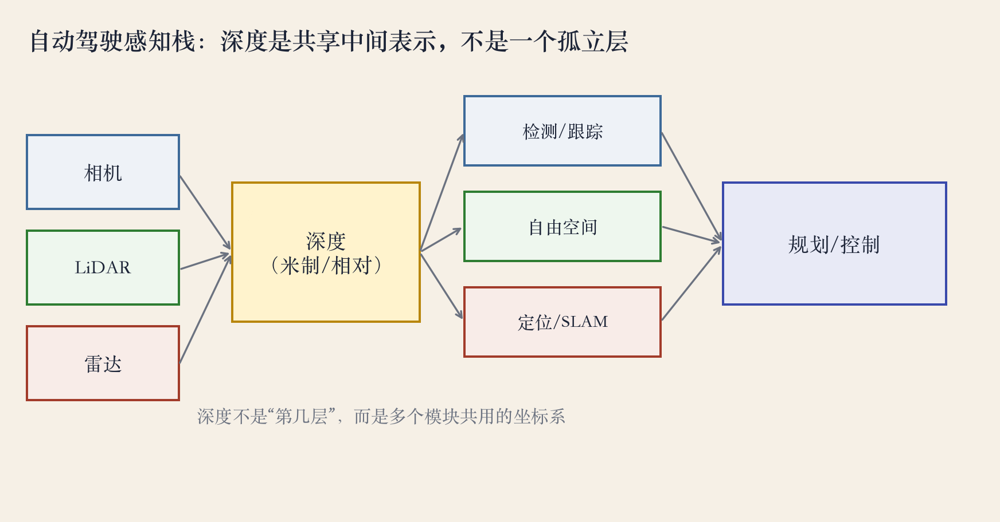
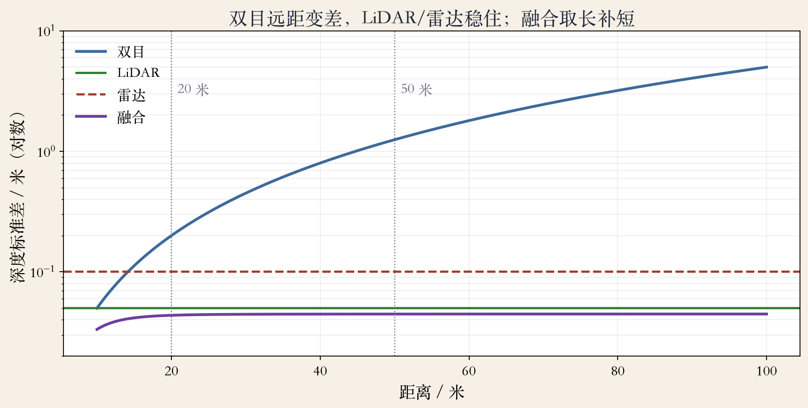
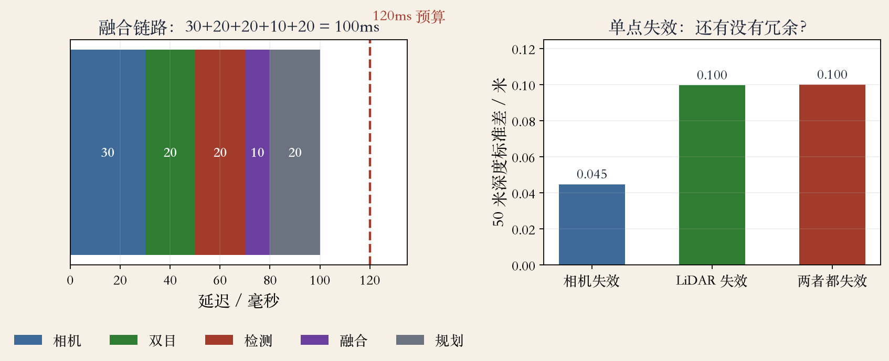

感知栈 · 总览
自动驾驶：一条感知栈
- 传感器进来，感知、预测、规划、控制逐层往下。
- 书上第 737 页：视觉早期就用于机器人导航。
- 检测、自由空间、定位都要用深度。
- 深度错了，后面的模块跟着错。
依据：原书第 737 页
栈里的深度
传感器 → 感知 → 预测
预测 → 规划 → 控制
深度：多个模块共用
三个传感器 · 三个下游
深度：三个模块共用的坐标
- 相机稠密，远距变差；LiDAR 稀疏但稳。
- 雷达能测距，横向比较粗。
- 问谁消费深度、各自要多准。
- 融合第一步是时间戳对齐。
依据：原书第 737 页；本集整理

感知栈：深度是共享中间表示｜程序生成，未用教材或论文原图
早期系统 · 历史线
早期系统：从 4 米到 100 公里
- 书上第 738 页：最早有 Stanford Cart。
- CMU 早期项目 10 秒走 4 米。
- VaMoRs 用 25Hz 卡尔曼滤波跑 100km/h。
- DARPA 的车装激光雷达和双目。
依据：原书第 738 页
早期系统
Stanford Cart：早期导航
CMU：10 秒 4 米
VaMoRs：25Hz、100km/h
DARPA：激光雷达+双目
组件清单 · 深度藏在哪
组件清单：深度藏在哪
- 书上第 738 页列了数据集、传感器、检测、分割。
- 还有立体、场景流、SLAM、场景理解、端到端。
- 深度没有单列，藏在立体和场景流里。
- 距离数据用于建图定位，叫 RGB-D SLAM。
依据：原书第 738 页
组件清单
数据集与基准
检测/分割/立体/场景流
SLAM/场景理解/端到端
深度没有单列
误差随距离 · 沙盘实验
误差：双目远距会飘
- 双目 20 米 0.20 米，50 米 1.25 米。
- LiDAR 50 米 0.05 米，雷达 0.10 米。
- 融合 50 米 0.045 米，比 LiDAR 还好。
- 曲线是沙盘模型，不是厂商标称。
依据：本集实验

深度误差随距离：双目、LiDAR、雷达、融合｜程序生成，未用教材或论文原图
自由空间 · 误检实验
幽灵障碍：噪声被阈值放大
- 50 米处本来空着，双目可能测成 49 米内。
- 同样阈值，双目误检 21.2%。
- LiDAR 误检 0.0%，但点云稀疏。
- 阈值越紧，误检越多。
依据：本集实验
自由空间
50 米阈值 1 米
双目误检 21.2%
LiDAR 误检 0.0%
延迟链 · 单点失效
冗余：坏一个还能开
- 30+20+20+10+20，链路共 100 毫秒。
- 相机掉线，还剩 LiDAR 加雷达，0.045 米。
- LiDAR 掉线，剩相机加雷达，0.100 米。
- 大雨浓雾会同时影响多个传感器。
依据：本集实验

融合链路 100ms 与单点失效：相机/LiDAR/两者都失效｜程序生成，未用教材或论文原图
延迟预算 · 安全距离
延迟：100 毫秒等于 1.5 米
- 15 米每秒就是 54 公里每小时。
- 100 毫秒里，车往前走 1.5 米。
- 每多 10 毫秒，安全距离多留 0.15 米。
- 500 毫秒的完美深度，对刹车可能太晚。
依据：本集实验
延迟账
15m/s × 0.1s = 1.5 米
每 10ms 多 0.15 米
100ms 只是感知预算
定位 · RGB-D SLAM
定位：深度把像素变成米
- 隧道、城市峡谷、地下车库没有卫星。
- 深度加视觉可以做里程计和回环。
- 没有深度，单目 SLAM 只有相似变换。
- 米制轨迹是控制需要的输入。
依据：原书第 738 页；本集实验
定位要尺度
无 GPS：隧道/峡谷/车库
深度把像素运动变米制
单目只有相似变换
总结 · 移交下一集
总结：深度贯穿整条栈
- 检测要距离，自由空间要可通行。
- 定位要尺度，最后一起进规划控制。
- 书上第 738 页：这些系统促成 Google、Tesla。
- 书上第 739 页：Skydio 用多图和深度图飞行。
依据：原书第 738–739 页